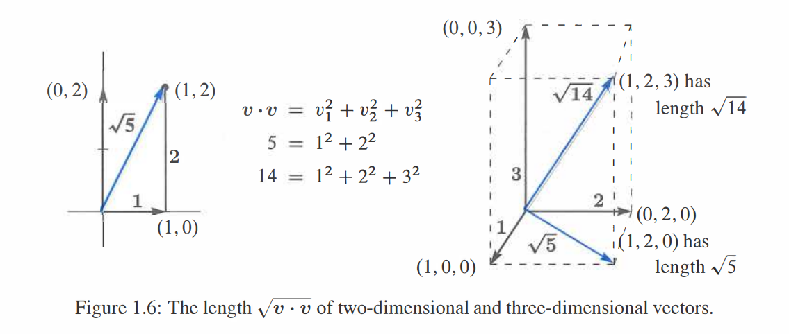
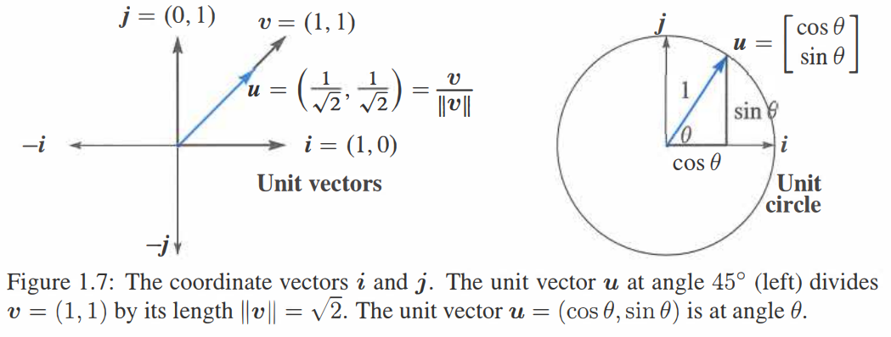
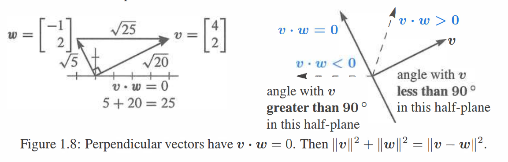
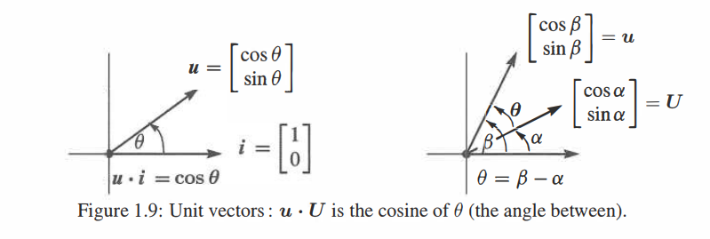

长度和点积
\(v=\begin{bmatrix}1\\2\end{bmatrix}\) 和 \(w=\begin{bmatrix}4\\5\end{bmatrix}\) 的点积为 \(v\cdot w=(1)(4)+(2)(5)=4+10=14\)。
\(v=\begin{bmatrix}1\\3\\2\end{bmatrix}\) 和 \(w=\begin{bmatrix}4\\-4\\4\end{bmatrix}\) 互相垂直因为 \(v\cdot w=0\)。
\(v=\begin{bmatrix}1\\3\\2\end{bmatrix}\) 长度的平方为 \(v\cdot v=1+9+4=14\)。长度为 \(||v||=\sqrt{14}\)。
\(u=\dfrac{v}{||v||}=\dfrac{v}{\sqrt{14}}=\dfrac {1}{\sqrt{14}}\begin{bmatrix}1\\3\\2\end{bmatrix}\) 则有长度 \(||u||=1\)，因为 \(\dfrac{1}{14}+\dfrac{9}{14}+\dfrac{4}{14}=1\)。
\(v\) 和 \(w\) 的夹角 \(\theta\) 满足 \(\cos {\theta}=\dfrac{v\cdot w}{||v||\ ||w||}\)。
\(\begin{bmatrix}1\\0\end{bmatrix}\) 与 \(\begin{bmatrix}1\\0\end{bmatrix}\) 的夹角满足 \(\cos{\theta}=\dfrac{1}{(1)(\sqrt 2)}\)，该夹角 \(\theta=45^{\circ}\)。
任意夹角都满足 \(|\cos{\theta}|\leq1\)，所以对于任意向量均有 \(\boxed{|v\cdot w|\leq||v||\ ||w||}\)。
第一节介绍了向量数乘。现在我们进一步定义 \(v\) 和 \(w\) 的 点积。该乘法操作包含了两个分别的乘积 \(v_1w_1\) 和 \(v_2w_2\) 但不止于此。将这两个数相加得到单个的数 \(v\cdot w\)。
该小节是关于几何的章节 (向量的长度和其夹角的余弦值)。
\(v=(v_1,v_2)\) 和 \(w=(w_1,w_2)\) 的 点积 或者 内积 为数 \(v\cdot w\): \[\tag{1}v\cdot w=v_1w_1+v_2w_2.\] 例1 \(v=(4,2)\) 和 \(w=(-1,2)\) 点积为零: \[ \begin{bmatrix}4\\2\end{bmatrix} \cdot \begin{bmatrix}-1\\2\end{bmatrix}=-4+4=0. \]
点积为零，向量相互垂直。
在数学中，零总是特殊的数字。对于点积它意味着 向量相互垂直，夹角为 \(90^{\circ}\)。当将其绘制在 \(Figure 1.1\) 中时，我们看到的是矩形 (不是任何可能的平行四边形)。关于垂直向量最简单直观的例子为沿着 \(x\) 轴 \(i=(1,0)\) 和沿 \(y\) 轴的 \(j=(0,1)\)，点积为 \(i \cdot j=0+0=0\)。向量 \(i\) 和 \(j\) 构成一个直角。
\(v=(1,2)\) 和 \(w=(3,1)\) 的点积是 \(5\)。\(v\cdot w\) 之后会揭示 \(v\) 和 \(w\) 之间的夹角 (不是\(90^{\circ}\))。请验证 \(w \cdot v\) 结果也是 \(5\)。
点积 \(w\cdot v\) 等于 \(v\cdot w\)。\(v\) 和 \(w\) 的顺序对结果没有影响。
例2 赋予点 \(x=-1\) (零的左边) \(4\) 的权重而点 \(x=2\) (零的右边) \(2\) 的权重，则 \(x\) 轴将会在中心点平衡 (像跷跷板一样)。两边重量平衡是因为由点积的 \((4)(-1)+(2)(2)=0\)。
这个例子在工程和科学领域中十分经典。权重向量 \(w_1,w_2=(4,2)\)，而相对于中心的距离向量 \(v_1,v_2=(-1,2)\)。权重与距离相乘，\(w_1v_1\) 和 \(w_2v_2\) 得到 “矩(moments)”。关于跷跷板平衡的方程为 \(w_1v_1+w_2v_2=0\)。
例3 点积也出现在金融和商业领域。我们需要购买和出售三种物品。它们的单个价格分别为 \(p_1,p_2,p_3\)——即 “价格向量” \(p\)。我们购买或者出售的数量为 \(q_1,q_2,q_3\)——出售为正，购买为负。以价格 \(p_1\) 售出 \(q_1\) 件物品会得到 \(q_1p_1\) 的收益。总收益 (数量 \(q\) 乘以价格 \(p\)) 为三维空间上的点积 \(q \cdot p\)：
收益 \(=(q_1,q_2,q_3) \cdot (p_1,p_2,p_3)=q_1p_1+q_2p_2+q_3+p_3=\) 点积。
点积为零的情况意味着 “收支平衡”。若 \(q \cdot p=0\) 则出售总额等于订购总额，此时 \(p\) 垂直于 \(q\) (在三维空间)。一家具有数千种商品的超市很容易陷入高维情形。
小笔记：电子表格在经营管理中已经成为必不可少的一部分，它们计算线性组合和点积，在屏幕上表现为一个矩阵。
重点 考虑 \(v \cdot w\)，将 \(v_i\) 和 \(w_i\) 两两相乘，从而有 \(v \cdot w=v_1w_1+\cdots+v_nw_n\)。
长度和单位向量
一种重要的情形是向量与自身的点积。在这种情况下 \(v=w\)。当向量为 \(v=(1,2,3)\) 时，关于自身的点积为 \(v \cdot v=||v||^2=14\)： \[ ||v||^2=\begin{bmatrix}1\\2\\3\end{bmatrix} \cdot \begin{bmatrix}1\\2\\3\end{bmatrix}=1+4+9=14 \]
向量自身的点积等于长度的平方。
与 向量间的 \(90^{\circ}\) 夹角相反此时我们得到 \(0^{\circ}\)。结果不是零是因为 \(v\) 不垂直于自身。由点积 \(v \cdot v\) 得到 \(v\) 的长度的平方。
定义 向量 \(v\) 的长度 \(||v||\) 是 \(v \cdot v\) 的平方根：
\[\textbf{长度}=||v||=\sqrt{v \cdot v}=(v^2_1+v^2_2+\cdots+v^2_n)^{\frac 1 2}.\]
在二维时长度是 \(\sqrt{v^2_1+v^2_2}\)，三维时它为 \(\sqrt{v^2_1+v^2_2+v^2_3}\)。根据之前的计算，\(v=(1,2,3)\) 的长度为 \(||v||=\sqrt{14}\)。
这里 \(||v||=\sqrt{v \cdot v}\) 只是代表该向量的箭头的平凡长度。如果分量分别为 \(1\) 和 \(2\)，则箭头为所成直角三角形的第三条边 (Figure 1.6)。毕达哥拉斯公式 \(a^2+b^2=c^2\) 联系了三条边：\(1^2+2^2=||v||^2\)。
对于 \(v=(1,2,3)\) 的长度，我们使用两次直角三角形公式。位于底部的向量 \((1,2,0)\) 长度为 \(\sqrt{5}\)。该底向量垂直于向上的向量 \((0,0,3)\)。所以该盒子的对角线具有长度 \(||v||=\sqrt{5+9}=\sqrt{14}\)。
四维向量的长度为 \(\sqrt{v^2_1+v^2_2+v^2_3+v^2_4}\)。因此向量 \((1,1,1,1)\) 长度为 \(\sqrt{1^2+1^2+1^2+1^2}=2\)，这是位于四维空间的具有单位长度的块的对角线。类似的对角线在 \(n\) 维空间中具有长度 \(\sqrt{n}\)。

单词“单位”总是代表某个等于“一”的度量。单位价格表示一个物品的价格。一个单位块具有长度为一的边。单位圆表示半径为一的圆。现在我们看下“单位向量”意味着什么。
定义 单位向量 \(u\) 是一个长度等于一的向量。从而有 \(u \cdot u=1\)。
一个四维空间的例子是 \(u=(\sqrt{\frac 1 2},\sqrt{\frac 1 2},\sqrt{\frac 1 2},\sqrt{\frac 1 2})\)，\(u \cdot u=\sqrt{1 4}+\sqrt{1 4}+\sqrt{1 4}+\sqrt{1 4}=1\)。通过将向量 \(v=(1,1,1,1)\) 除以其长度 \(||v||=2\) 得到这个单位向量。
例4 沿 \(x\) 和 \(y\) 轴的标准单位向量写作 \(i\) 和 \(j\)。在 \(xy\) 平面上，与 \(x\) 轴成角度 \(\theta\) 的单位向量为 \((\cos{\theta},\sin{\theta})\)：
\[i=\begin{bmatrix}1\\0\end{bmatrix}\quad j=\begin{bmatrix}0\\1\end{bmatrix} \quad u=\begin{bmatrix}\cos{\theta}\\\sin{\theta}\end{bmatrix}.\]
当 \(\theta=0\)，水平向量 \(u=i\)。当\(\theta=90^{\circ}\) (或者 \(\frac {\pi} 2\) 弧度)，竖直向量 \(u=j\)。取任意角度，由于 \(\cos^2{\theta}+\sin^2{\theta}=1\) 分量 \(\cos{\theta}\) 和 \(\sin{\theta}\) 均得到 \(u \cdot u=1\)。这些向量遍布在 Figure 1.7 上的单位圆上。因此 \(\cos{\theta}\) 和 \(\sin{\theta}\) 仅仅是单位圆上成 \(\theta\) 角的点的坐标。
由于 \((2,2,1)\) 长度为 3，故向量 \(\frac {2} {3},\frac {2} {3},\frac {1} {3}\) 长度为 1。验证可得 \(u \cdot u=\frac {4} {9}+\frac {4} {9}+\frac {1} {9}=1\)。为了得到一个单位向量，可将任何非零向量 \(v\) 除以其长度 \(||v||\)。
单位向量 \(u=v/||v||\) 是与 \(v\) 同方向的单位向量。

向量间夹角
我们表述过垂直向量满足 \(v \cdot w=0\)。当角度为 \(90^{\circ}\) 时点积为零。为了说明这个关系我们必须将角度关联到点积。之后我们将会展示如何通过 \(v \cdot w\) 找到非零向量 \(v\) 和 \(w\) 的夹角。
直角 当 \(v\) 垂直于 \(w\) 时点积 \(v \cdot w=0\)。
证明 当 \(v\) 和 \(w\) 相互垂直时，它们组成直角三角形的两边。第三边是 \(v-w\) (穿过Figure 1.8 的斜边)。关于直角三角形的 毕达哥拉斯定律 是 \(a^2+b^2=c^2\)。
\[\tag{2} \textbf{垂直的向量}\quad||v||^2+||w||^2=||v-w||^2\]
在二维情形时写出上述公式，方程为
\[\tag{3} (v^2_1+v^2_2)+(w^2_1+w^2_2)=(v_1-w_1)^2+(v_2-w_2)^2\]
等式右边第一项展开为 \(v^2_1-2v_1w_1+w^2_1\)，\(v^2_1\) 和 \(w^2_1\) 出现在方程左右两边于是可以消去，余下 \(-2v_1w_1\)。同理 \(v^2_2\) 和 \(w^2_2\) 也被消去，剩下 \(-2v_2w_2\)。(在三维情况下还会有一项 \(-2v_3w_3\)。) 现在除以 \(-2\) 得到 \(v-w=0\)：
\[\tag{4} 0=-2v_1w_1-2v_2w_2 \Rightarrow v_1w_1+v_2w_2=0.\]
结论 直角得到 \(v \cdot w=0\)。当角度为 \(90^{\circ}\) 时点积为零，\(\cos{\theta}=0\)。零向量 \(v=0\) 垂直于任意向量 \(w\) 因为 \(0 \cdot w\) 总是零。
现在假设 \(v\cdot w\) 不为零。它可能为正也可能为负。\(v \cdot w\) 的正负号可以立刻告诉我们角度是大于还是小于 \(90^{\circ}\)。当 \(v \cdot w\) 为正时角度小于 \(90^{\circ}\)，为负时角度大于 \(90^{\circ}\)。Figure 1.8 右边展示了一个示例向量 \(v=(3,1)\)。与 \(w=(1,3)\) 的夹角小于 \(90^{\circ}\)，因为 \(v \cdot w=6\) 为正。

边界线说明了向量垂直于 \(v\) 时的位置。在那条位于正号和负号之间的线上，\((1,-3)\) 垂直于 \((3,1)\)，点积为零。
点积揭示了精确的角度值。对于单位向量 \(u\) 和 \(U\)，\(u \cdot U\) 的符号告诉我们 \(\theta \lt 90^{\circ}\) 还是 \(\theta \gt 90^{\circ}\)。更进一步，点积 \(u \cdot U\) 是夹角 \(\theta\) 的余弦值，这在 \(n\) 维情况依然为真。
夹角为 \(\theta\) 的单位向量 \(u\) 和 \(U\) 满足 \(u \cdot U=\cos{\theta}\)。故显然 \(|u \cdot U| \le 1\)。
请记住 \(\cos{\theta}\) 不可能大于 \(1\)，不可能小于 \(-1\)。故 单位向量的点积位于 \(-1\) 和 \(1\) 之间。\(\theta\) 的余弦值由 \(u \cdot U\) 得到。
Figure 1.9 清晰地展示了向量为 \(u=(\cos{\theta},\sin{\theta})\) 和 \(i=(1,0)\) 时的情况。点积为 \(u \cdot i=\cos{\theta}\)，这是它们之间夹角的余弦值。
在旋转任意角度 \(\alpha\) 后，向量 \(u\) 旋转到 \((\cos{\beta},\sin{\beta})\)，其中 \(\beta=\alpha+\theta\)。这时点积为 \(\cos{\alpha}\cos{\beta}+\sin{\alpha}\sin{\beta}\)。根据三角函数这是 \(\cos{(\beta-\alpha)}=\cos{\theta}\)。

如果 \(v\) 和 \(w\) 不是单位向量会怎样呢？通过除以它们的长度可以得到 \(u=v/||v||\) 和 \(U=w/||w||\)，单位向量\(u\) 和 \(U\)的点积给出 \(\cos{\theta}\)。
余弦公式 若 \(v\) 和 \(w\) 为非零向量则 \(\frac{v \cdot w} {||v||\ ||w||}=\cos{\theta}\)。
不论夹角多少度，关于 \(v/||v||\) 和 \(w/||w||\) 的点积不会超过一。这就是关于点积的 “Schwarz inequality” \(|v \cdot w| \le ||v||\ ||w||\)——或更正式地说法是 Cauchy-Schwarz-Buniakowsky 不等式。它在法国和德国还有俄罗斯被首次发现 (可能还有其他地方——它是数学上最重要的不等式)。
由于 \(|\cos{\theta}|\) 总是不超过 1，故余弦公式给出下面两个伟大的不等式：
SCHWARZ INEQUALITY \(v \cdot w \lt ||v||\ ||w||\)
TRIANGLE INEQUALITY \(||v+w|| \lt ||v||+||w||\)
例5 求 \(v=\begin{bmatrix}2\\1\end{bmatrix}\) 和 \(w=\begin{bmatrix}1\\2\end{bmatrix}\) 的 \(\cos{\theta}\) 并验证两个不等式。
解 点积 \(v \cdot w=4\)。\(v\) 和 \(w\) 长度均为 \(\sqrt{5}\)。则余弦值为 \(\frac 4 5\)。
\[\cos{\theta}=\frac {v \cdot w} {||v||\ ||w||}=\frac {4} {\sqrt5\sqrt5}=\frac 4 5.\]
根据施瓦兹不等式，\(v \cdot w=4\) 小于 \(||v||\ ||w||=5\)。根据三角不等式，边 3 \(=||v+w||\) 小于边 1 + 边 2。因为 \(v+w=(3,3)\) 则三条边满足 \(\sqrt {18} \lt \sqrt{5}+\sqrt{5}\)。平方该不等式得到 \(18 \lt 20\)。
例6 \(v=(a,b)\) 和 \(w=(b,a)\) 的点积为 \(2ab\)。长度均为 \(\sqrt{a^2+b^2}\)。则此时施瓦兹不等式 \(v \cdot w \lt ||v||\ ||w||\) 说明 \(2ab \le a^2+b^2\)。
如果令 \(x=a^2,y=b^2\) 该不等式的意义将更加明显，“几何平均值” \(\sqrt{xy}\) 不会大于 “算术平均值” \(\frac{1}{2}(x+y)\)。
\[ab \lt \frac {a^2+b^2}{2} \Rightarrow \sqrt{xy} \lt \frac{x+y}{2}.\]
例5中 \(a=2,b=1\)，所以 \(x=4,y=1\)。此时几何平均值 \(\sqrt{xy}=2\) 小于算术平均值 \(\frac{1}{2}(1+4)=2.5\)。
关于计算的说明
MATLAB，Python 和 Julia 直接处理向量整体而不是其分量。当 \(v\) 和 \(w\) 被定义后，\(v+w\) 能够立即被理解。以行的形式输入 \(v\) 和 \(w\)——符号 \('\) 转置其为列的形式，\(2v+3w\) 将变成 \(2*v+3*w\)。除非以分号结尾否则结果将会被打印。
MATLAB \(v=[2\ 3\ 4]'\ ;\ w=[1\ 1\ 1]'\ ;\ u=2*v+3*2\)
点积 \(v \cdot w\) 是一个行向量乘以一个列向量 (使用 \(*\) 而不是 \(\cdot\))：
与 \(\ \begin{bmatrix}1\\2\end{bmatrix} \cdot \begin{bmatrix}3\\4\end{bmatrix}\ \) 相反，我们更常见到 \(\ \begin{bmatrix}1&2\end{bmatrix}\begin{bmatrix}3\\4\end{bmatrix}\ \) 或者 \(v'*w\)
在MATLAB中以 \(\text{norm}(v)\) 表示 \(v\) 的长度，等于 \(\text{sqrt}(v'*v)\)。然后可从点积 \(v'*w\) 计算余弦值并计算相应角的弧度值：
\[\begin{align*}&\text{余弦值}=v'*w/(\text{norm}(v)*\text{norm}(w))\\ &\text{角度}=\text{acos}(\text{余弦值}) \end{align*}\] 一个 M 文件将会创建一个新函数 \(\textbf{cosine}(v,w)\)。Python 和 Julia 是开源的。
关键思想回顾
- 点积 \(v \cdot w\) 将每个分量 \(v_i\) 乘以 \(w_i\) 然后将所有 \(v_iw_i\) 相加。
- 长度 \(||v||\) 是 \(v \cdot v\) 的平方根。\(u=v/||v||\) 是 单位向量 ：长度 1。
- 当向量 \(v\) 和 \(w\) 相互垂直时点积 \(v \cdot w=0\)。
- \(\theta\) (任意非零向量 \(v\) 和 \(w\) 的夹角) 的余弦不会超过 1： \[ \cos{\theta}=\frac{v \cdot w}{||v||\ ||w||} \qquad |v \cdot w| \le ||v||\ ||w||. \]
典型示例
1.2 A 对于向量 \(v=(3,4)\) 和 \(w=(4,3)\) 分别测试施瓦兹不等式和三角不等式。求 \(v\) 和 \(w\) 夹角的 \(\cos{\theta}\)。哪一对 \(v\) 和 \(w\) 给出等式 \(|v \cdot w|=||v||\ ||w||\) 和 \(||v+w||=||v||+||w||\)？
解 点积为 \(v \cdot w=(3)(4)+(4)(3)=24\)。\(v\) 的长度为 \(||v||=\sqrt{9+16}=5\) 同理可得 \(||w||=5\)。和 \(v+w=(7,7)\) 长度为 \(7\sqrt{2} \lt 10\)。
\[
\begin{align*}
&\textbf{施瓦兹不等式}&|v \cdot w| \lt ||v||\ ||w|| \quad为\quad 24 \lt 25. \\
&\textbf{三角不等式}&||v+w|| \lt ||v||+||w||\quad为\quad 7\sqrt{2} \lt 5+5.\\
&\textbf{角度余弦}\quad&\cos{\theta}=\frac{24}{25}
\end{align*}
\]
等式成立：一个向量是另一个向量的倍数 \(w=cv\)。此时角度为 \(0^{\circ}\) 或者 \(180^{\circ}\)。在这种情况下 \(|\cos{\theta}|=1\) 且 \(|v \cdot w|=||v||\ ||w||\)。若角度是 \(0^{\circ}\)，比如 \(w=2v\)，则有 \(||v+w||=||v||+||w||\) (等式两边均为 \(3||v||\))。这个 \(v,2v,3v\) 三角形是平坦的！
1.2 B 求在 \(v=(3,4)\) 方向的单位向量 \(u\)。求垂直于 \(u\) 的单位向量 \(U\)。对于 \(U\) 有多少种可能性？
解 对于单位向量 \(u\)，将 \(v\) 除以其长度 \(||v||=5\) 得到。对于垂直向量 \(V\) 我们可以选择 \((-4,3)\)，因为点积 \(v \cdot V\) 为 \((3)(-4)+(4)(3)=0\)。为求垂直于 \(u\) 的单位向量，将 \(V\) 除以自身长度 \(||V||\) 得到：
\[
u=\frac{v}{||v||}=(\frac{3}{5},\frac{4}{5})\qquad U=\frac{V}{||V||}=(-\frac{4}{5},\frac{3}{5}) \qquad u \cdot U=0
\]
唯一的另一个与单位向量垂直的向量为 \(-U=(\frac{4}{5},-\frac{3}{5}\)。
1.2 C 求向量 \(x=(c,d)\) 满足点积 \(x \cdot r=1\) 和 \(x \cdot s=0\)，其中 \(r=(2,-1)\) 和 \(s=(-1,2)\)。
解 两个点积给出了关于 \(c,d\) 的线性方程，\(x=(c,d)\)。
\[
x \cdot r=1 \Rightarrow 2c-d=1 \\
x \cdot s=0 \Rightarrow -c+2d=0
\]
1.1 节从列 \(v_j\) 出发，目标是得到 \(x_1v_1+ \cdots +x_nv_n=b\)。这节从行 \(r_i\) 出发，目标是找到 \(x\) 满足 \(x \cdot r_i=b_i\)。
在后面的章节中 \(v\)'s 将会成为矩阵A的列，而 \(r\)'s 将会成为A的行，然后 (唯一的) 问题将转化为解 \(Ax=b\)。